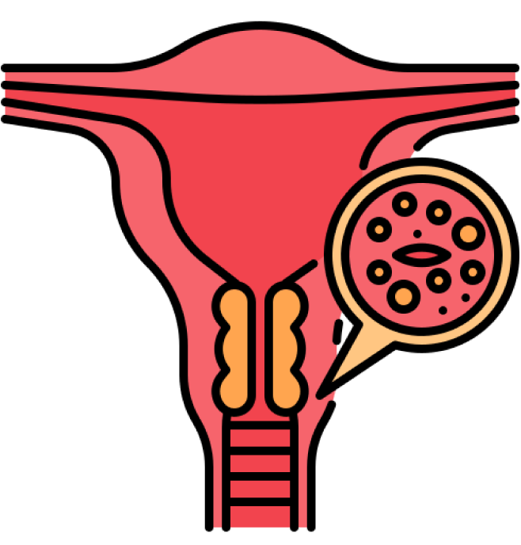

1. Tamizaje para la detección temprana
Para iniciar el módulo, estudia cual es la importancia del tamizaje:

El VPH-AR está presente en la mayoría de los casos de cáncer de cuello uterino.
La detección temprana de lesiones precancerosas permite intervenciones oportunas.
Se requiere un programa organizado de tamizaje con cobertura adecuada, personal capacitado y garantía de seguimiento.
Página 3 de 12